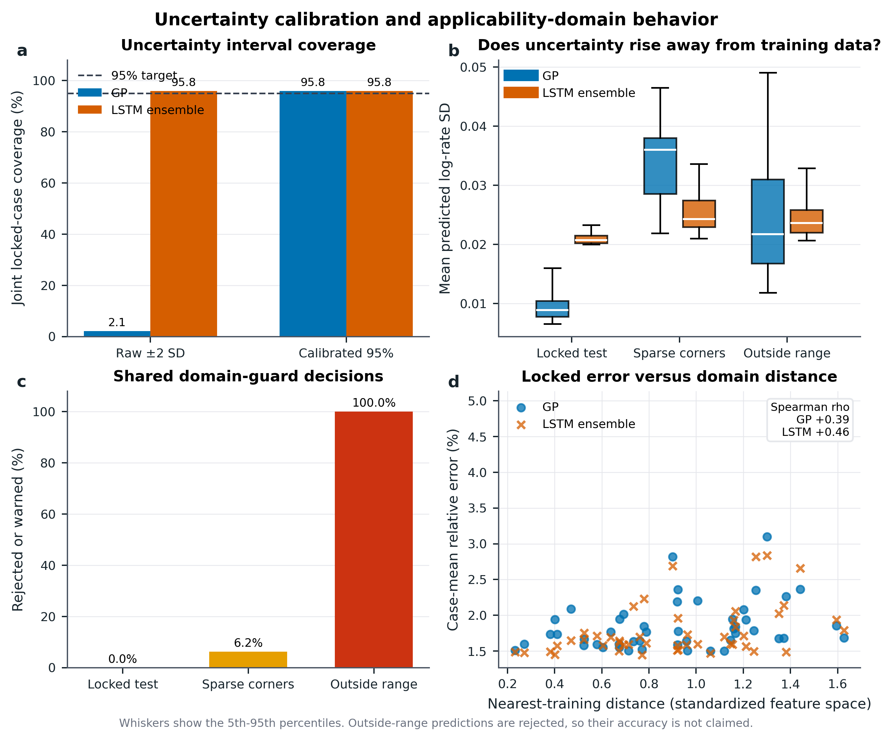
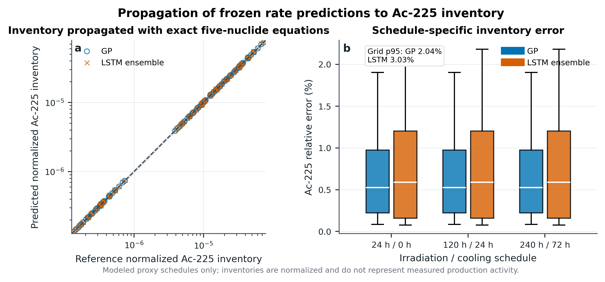

What you built
A computational screening system for one reduced isotope-production pathway. It contains a V3 time-history study and a V4 reaction-rate study.
Module 1 / Start here
Can a frozen, failure-aware surrogate rapidly screen modeled Ra-226 to Ac-225 production conditions, quantify uncertainty, reject unfamiliar inputs, and send promising candidates back to trusted physics for verification?
A computational screening system for one reduced isotope-production pathway. It contains a V3 time-history study and a V4 reaction-rate study.
If high-fidelity calculations are expensive and many plans must be checked, a reliable surrogate can narrow the search first.
It does not yet prove cheaper production, reactor accuracy, clinical safety, or replacement of OpenMC, SCALE/ORIGEN, or experiments.
I am not claiming a neural network creates Ac-225. I am testing whether it can reduce the candidate calculations needed during planning.
"Make cancer treatment cheaper" is the motivation, not a result this experiment directly measured.
The weights and decision rules stop changing before the final test, so I cannot tune the model after seeing its answer.
Module 1 / Complete story
Memorize this order so you do not jump randomly between nuclear physics, AI, and real-world claims.
Ac-225 is important to targeted alpha therapy and its production planning is difficult.
Five coupled equations describe desired Ac-225 buildup and a competing Ac-227 branch.
V3 predicts time histories. V4 predicts two modeled reaction rates.
Rank in-domain candidates and attach uncertainty and warnings.
Recalculate finalists with trusted physics and compare with Berkeley experiments.
Motivate, model, learn, screen, verify. Every poster section belongs somewhere in this chain.
Call it solver-generated modeled data. It is valid for internal method testing but weaker than independent experimental evidence.
Module 2 / Nuclear physics
A nuclear reaction changes mass number differently from beta decay.
Desired branch
Competing branch tracked by the reduced model
Fast neutrons convert Ra-226 into Ra-225 through (n,2n). Ra-225 then beta decays into Ac-225.
Call it a long-lived tracked impurity concern. Do not quote one universal safe percentage.
Module 2 / Quantities
If half-life is in hours, lambda is in h-1.
One becquerel is one decay per second. Activity is a rate, not simply an amount.
Flux times cross section gives interaction probability per target atom per time. One barn is 10-24 cm2.
A real neutron field contains many energies, so the cross section must be weighted by the spectrum.
Flux is n cm^-2 s^-1 and cross section is cm^2, so their product is s^-1 per target atom.
A timestamp or recovery mismatch can look like model error. Always name the isotope and time attached to an activity.
Module 2 / Calculus
A derivative is the instantaneous rate at which an isotope inventory changes.
Compact form: dN/dt = MN, where M stores all source and sink coefficients.
Draw every arrow into an isotope as a positive source and every arrow out as a negative sink.
The displayed equations are the simplified form. The code can include declared branching or yield factors where needed.
Module 2 / Numerical physics
| Nuclide | Half-life used |
|---|---|
| Ra-226 | about 1,600 years |
| Ra-225 | 14.8 days |
| Ac-225 | 9.920 days |
| Ra-227 | 42.2 minutes |
| Ac-227 | 21.772 years |
The equations contain very fast and very slow clocks. A stable method must handle the Ra-227 transient while following long-term buildup.
| Reference | What it proves | What it does not prove |
|---|---|---|
| Matrix exponential | Exact reduced linear-chain propagation for fixed interval rates | That the supplied rates or chain are physically complete |
| Radau | Accurate numerical solution of the declared stiff ODEs | Experimental or reactor truth |
| OpenMC/SCALE | Much richer transport/depletion calculations | Anything about your model until directly compared |
| Berkeley experiment | Real measured evidence at two conditions | Universal reactor or clinical validation |
A solver can be mathematically correct and physically incomplete at the same time.
Radau output is not reactor data, and the V4 finite-geometry/TENDL proxy is not OpenMC data.
Module 3 / From zero
An input, such as energy, time, flux, distance, or initial inventory.
The answer to predict, such as a trajectory or reaction rate.
A number measuring wrongness. Training adjusts weights to lower it.
One pass through training data. More epochs do not guarantee a better model.
Saved weights from one training time, selected using declared development data.
Training performance improves while performance on new cases gets worse.
The network is a flexible mathematical function. Training selects its numerical weights; it does not discover physical truth automatically.
Validation can stop improving while training loss falls, which signals overfitting.
Module 3 / Experimental design
Fits model weights.
Chooses checkpoint or settings.
Sizes uncertainty intervals, not the mean model.
Judges after choices are frozen.
A random seed fixes pseudorandom initialization and data order. It is not a physics constant. Multiple seeds test dependence on luck.
Choosing it is valid if the rule uses validation data and was declared before the final test. Reusing test answers to choose it causes leakage.
Train learns. Selection chooses. Calibration sizes intervals. Test judges.
They show sensitivity to initialization, and their disagreement can help estimate model uncertainty.
Module 4 / Version map
| Version | Main job | Core model | Evidence meaning |
|---|---|---|---|
| V2 | Earlier parametric isotope model and feed-forward control | MLP/PINN family | Established baselines and exposed physics-residual bugs |
| V3 | Predict five-species time histories and rank schedules | PI-LSTM, 64 time points, 1,400 Radau trajectories, frozen seed 42 | Tests the reduced time-history problem |
| V4 | Predict two finite-geometry proxy reaction rates with uncertainty and domain checks | GP versus five-seed LSTM ensemble | Tests static rate interpolation, not full trajectories |
V4 is not simply "newer V3." It is a separate rate-surrogate experiment that can feed a chain calculation.
One possible staged workflow is V4 rates, then exact or V3 propagation, then trusted-solver verification.
Module 4 / Architecture and loss
Time, flux, energy feature, and five starting inventories.
Sine/cosine bands expose multiple time and energy scales.
Hidden size 256 carries numerical state across 64 time points.
Keeps all five predicted inventories nonnegative.
Forces the prediction to equal the input inventory at time zero.
Compares predictions with Radau-generated trajectories.
Penalizes interval imbalance in the Bateman equations.
The loss enforces only the equations and assumptions included in code, and optimization can still be imperfect.
Its gates retain or update numerical information; it is not long-term and short-term human reasoning.
Module 5 / V3 evidence
V3 recovered 18 of Radau's top 20. Its selected plan was Radau rank 2, only 0.047% below Radau's best objective.
V3 was 84.9x faster than Radau for that batch, but 56.7x slower than the exact analytic batch baseline for the same reduced equations.
Pair median with tail error, shifted tests, failure maps, and a domain guard.
Frozen seed-42 V3 improved median modeled Ac-225 endpoint error over a parameter-matched MLP and preserved a near-best schedule after solver verification.
Module 5 / V4 design
A probabilistic kernel model suited to small, smooth tabular datasets. It outputs a mean and standard deviation.
Risk: its raw uncertainty was badly calibrated for one rate.
Five independently initialized neural models whose mean is the prediction and whose disagreement contributes to uncertainty.
Risk: V4 sequence length was one, so memory was not tested.
A more complicated model should not win by default. The protocol decides.
42, 314, 1618, 2026, and 2718 test dependence on random initialization.
Module 5 / Result 1

The curves overlap. LSTM is slightly better at median; GP is slightly better at p95 and propagated Ac-225 p95.
I did not force a winner after seeing the bars.
Module 5 / Result 2

For each model, 46 of 48 locked cases contained both true rates.
Only 1 of 48 cases had both rates inside raw plus/minus 2 SD. Calibration was essential.
Every constructed outside-range case was refused.
No locked in-domain test family was falsely rejected.
Plus/minus 2 SD is near 95% only under appropriate assumptions. V4 tested the assumption and showed raw GP joint intervals failed.
The guard rejected 100% of explicit OOD cases; it did not predict those cases accurately.
Module 5 / Result 3

2.04% on the modeled propagation grid.
3.03% on the modeled propagation grid.
It isolates rate-surrogate error instead of adding a second learned approximation.
Three schedules are a sanity test, not a complete real production optimization.
Module 5 / Real-data boundary
The frozen estimate was roughly 600x high, and the cases were outside V3 support.
Correct action: preserve the failure, reject the input, and investigate definitions without tuning the model to force agreement.
| Still needed | Why |
|---|---|
| Target-integrated spectrum and absolute fluence | Sets neutron number and energy at the Ra target |
| Beam spot, geometry corrections, and position | Converts source neutrons into target exposure |
| Beam-current history | Determines exposure through time |
| Spectrum uncertainty or covariance | Allows propagated uncertainty |
| Produced versus recovered activity and timestamps | Separates nuclear yield, decay, and chemistry loss |
| Ac-227 detection limit | "Not observed" is an upper bound, not exact zero |
Freeze the conversion protocol, run both energies once, and report success or failure.
External transfer to two accelerator-neutron experiments, not reactor, commercial, or clinical validation.
Module 6 / Direct answer
Five nuclides and supplied or learned rates inside a declared domain.
Detailed geometry, energy-dependent neutron transport, evaluated data, and much larger reaction networks.
A tiny learned mapping and a full transport/depletion calculation are not the same problem.
| Measured comparison | Result | Allowed interpretation |
|---|---|---|
| V3 versus Radau, 10,000 reduced cases | 84.9x faster | Fast repeated emulation of the declared ODE task |
| V3 versus exact reduced-chain batch | 56.7x slower | ML is not fastest for this small constant-rate chain |
| V4 LSTM, 10,000 A100 predictions | 0.0204 s | High batched neural throughput |
| V4 GP, 10,000 CPU predictions | 0.4658 s | Also fast; different hardware prevents fair speed ranking |
| V4 versus OpenMC/SCALE/ORIGEN | Not measured | No supercomputer or full-workflow speed claim |
OpenMC repeatedly computes reaction rates through neutron transport and then evolves nuclide densities. Transport is the expensive part, not these five equations alone.
A filter can be valuable without replacing the source of truth.
Module 6 / Novelty audit
| Question | Answer | Correct wording |
|---|---|---|
| Are Bateman equations or stiff solvers new? | No | They are the foundation. |
| Are PINNs for Bateman equations new? | No | Prior work exists. |
| Are ML nuclide surrogates new? | No | Neural and GP depletion surrogates exist. |
| Is LSTM plus physics automatically novel? | No | An architecture label is not a contribution. |
| Is this exact pathway-specific, failure-aware workflow common? | Not identified in the 137-source audit | Call it an uncommon reviewed combination, not a universal first. |
| Is validated scientific novelty complete? | Pending | Berkeley transfer and decision reliability would strengthen it. |
A frozen pathway-specific schedule screen with trusted-solver finalist verification.
A fair GP/LSTM test with calibrated uncertainty and explicit domain rejection.
A preserved external failure that defines where the simplified model stops transferring.
A new method, application, dataset, comparison, or finding. Your best route is application plus rigorous evaluation and decision insight.
The audit shows what you did not identify in screened records, not proof that nobody has ever done it.
Module 6 / Claim control
On a frozen finite-geometry/TENDL modeled proxy, both GP and five-seed LSTM achieved below-4% p95 rate error, 95.8% calibrated joint coverage, and 100% rejection of explicit outside-range cases. Ordering was unresolved.
The frozen workflow was externally evaluated against two published accelerator-neutron irradiations. Then state the observed result, whatever it is.
"Beats supercomputers," "solves the shortage," "proves clinical safety," "makes production cheaper," "works in every reactor," or "all errors are below 3%."
Demonstrated for direct results; supports for interpretation; suggests for limited evidence; aims for purpose; does not establish for boundaries.
A limitation you understand is not a weakness. A claim your experiment never tested is.
Module 7 / Mock defense
For the five-species constant-rate chain, ML is not fastest. The research question is whether it becomes useful when upstream reference calculations include expensive geometry/transport and many candidates. That full claim remains untested.
V3 is sequential, so recurrence was a reasonable hypothesis and a matched MLP was the control. V4 is static and cannot prove memory helps.
Its observed p95 was lower, but the paired interval crossed zero. GP is provisional leader, not a resolved winner.
The loss penalizes integrated Bateman imbalance, while the architecture enforces time-zero inventory and nonnegative outputs.
It is an established implicit stiff ODE method and a numerical reference for my equations, not experimental truth.
Parameter-matched MLP for V3, GP for V4, and exact matrix exponential to test whether ML is needed at all.
Direct answer, evidence, boundary. Do not start with a long backstory.
"I do not know yet; the Berkeley test is designed to answer that" is scientifically strong.
Module 7 / Mock defense
Median relative error across two modeled V4 reaction-rate outputs on 48 locked proxy families for the five-seed LSTM. It is not experimental Ac-225 error.
It represents the high-error tail. A good median can hide rare errors that mis-rank candidates.
No. It is empirical coverage after calibration on this modeled split and applies only to similar accepted cases.
Evidence is mainly reduced modeled proxy data, and clean experimental transfer is unresolved.
It isolates the desired and competing paths in a tractable scope, while omitting many reactions, daughters, transport, and chemistry.
If correctly normalized frozen Berkeley tests miss, I conclude the model does not transfer and use the failure to define required physics or domain changes.
Explain why five nuclides were useful, then clearly state what is missing.
Always say rate error, endpoint error, inventory error, coverage, or rejection rate. A percentage without its object misleads.
Module 7 / Speak naturally
"I built a failure-aware model for one Ac-225 production pathway. It screens modeled conditions, reports uncertainty, rejects unfamiliar inputs, and sends promising cases back to trusted physics."
"Ac-225 has potential in targeted alpha therapy, so I studied a fast-neutron route from Ra-226 through Ra-225. Five equations track the desired Ac-225 and competing Ac-227 pathways. V3 learned trajectories and ranked 10,000 modeled schedules. V4 compared a GP and five-seed LSTM for reaction rates, uncertainty, and domain rejection. Both passed internal gates, but neither won statistically. The decisive next step is a frozen comparison with two Berkeley experiments."
"My results show accuracy on reduced modeled proxies, not experimental production accuracy or proof that the real process is faster or cheaper."
Use short sentences. Replace words you never say, but preserve scientific nouns and units.
A clear question, meaningful result, strong control, honest failure, and whether you understand your choices.
Module 8 / Learn it for real
Rereading creates familiarity. Expertise comes from rebuilding an answer without looking, checking the gap, and repeating later.
If one forgotten word destroys the answer, you memorized wording instead of understanding. Explain each idea three ways.
Define it, draw it, use its units, explain why it matters, name its limit, and answer one follow-up.
Module 8 / Final reference
Fast approximation of a slower reference inside a declared domain.
A model whose loss or structure uses governing equations.
Probabilistic kernel model predicting a mean and uncertainty.
Several independent models whose predictions are combined.
Adjusting interval size to achieve target held-out coverage.
An input unlike the declared training and evaluation domain.
The middle sorted error.
A tail metric with about 95% of errors at or below it.
Repeated resampling used to estimate uncertainty in a statistic.
Flux integrated over time: total neutron exposure per area.
Energy-dependent measure of interaction probability.
Radioactive decays per second; A=lambda N.
Frozen metrics, limits, and safe claim.
Architecture, softplus, and hard IC.
Integrated and exact interval options.
Recomputed metrics and hashes.
Novelty and research-gap boundary.
Exact interpretation of each graph.
Berkeley experimental context.
Transport and depletion workflow.
Established depletion context.
Published neural depletion surrogate.
Prior PINN Bateman work.
Dataset, input ZIP, code, and output hashes.
You are ready when you can explain without slides and use files only to prove details.
Confidence comes from knowing exactly what evidence says, not pretending limitations disappeared.
All modules